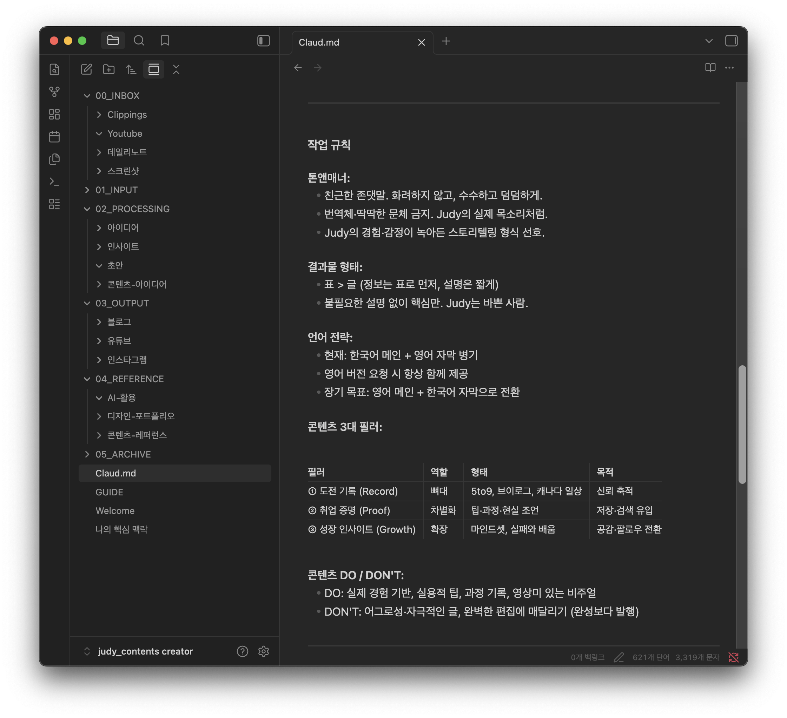
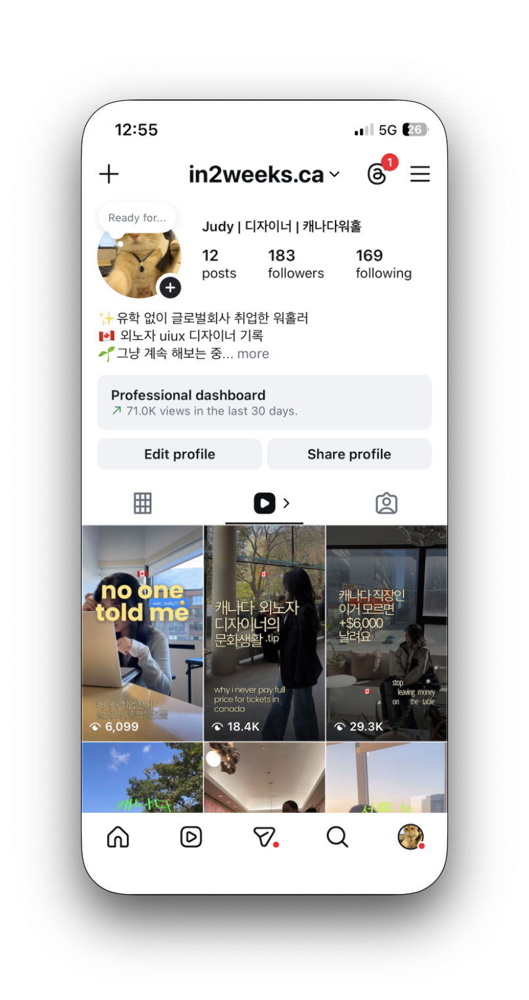

혼자 돌린 작은 실험이다 · 규모를 자랑하려는 케이스가 아니다. 보여주고 싶은 건 흐름이다 · 팔로워 181명으로 30일 만에 69K 조회수 · unique 시청자 34K · 도달은 ~188배 · Claude와 Meta Edits로 내가 쓴 시간은 총 ~10시간.
AI가 크리에이티브 작업에 실제로 얼마나 힘이 되는지 알고 싶었다 · 막연하게가 아니라 · 진짜 오디언스와 숫자가 있는 플랫폼 위에서.
한국에서 배운 인사이트를 해외 한인 니치에 적용했다. 캐나다의 working-holiday · 이민 전문직 한국인 커뮤니티가 타겟이다. 이 오디언스는 스크롤 전에 일단 save부터 하는 · 한국 정보 탐색자 특유의 행동을 공유한다. 나도 이 커뮤니티 안에 있어서 · 어떤 단어를 쓰는지 · 어떤 질문을 하는지 · save한 콘텐츠를 언제 꺼내 쓰는지까지 안에서 볼 수 있었다.
계정에는 총 Reel 8개가 있다 · 앞선 3개는 AI 없이 만들었고 · 뒤 5개는 AI 흐름으로 만들었다. 이 케이스는 뒤 5개에 집중한다 · 흐름이 제대로 돌아가고 반복이 쌓이기 시작한 구간이다.
이 실험이 답해야 할 질문은 두 가지였다.
예산 0 · 팔로워 181명 · 아주 좁은 타겟. Instagram Reels에서 의미 있는 도달을 어떻게 만들까?
AI를 도구 삼아 한 사람이 콘텐츠 스튜디오를 얼마나 돌릴 수 있을까? 30일 동안 Reel 5개 · 다만 이 숫자는 내 한계가 아니다. 초반 세팅과 학습에 시간이 가장 많이 들었고 · 흐름이 자리 잡은 뒤로는 하루 1 Reel도 가능한 속도였다. 증명된 건 흐름 자체가 1인 팀으로 돌아간다는 점이다.
출처 · Instagram Insights. 초기 Reels의 save 대 like 비율이 플랫폼 평균보다 높았다 · 이 오디언스가 목적을 가지고 움직인다는 조용한 시그널이다. 나중에 써먹으려고 save한다 · 그냥 스크롤하지 않는다.
이민 · 세금 시즌 · 구직 정보는 즉흥적으로 보는 콘텐츠가 아니다. 저장해뒀다가 때 되면 꺼내 쓰는 결정들이다.
목적이 분명한 오디언스라면 봐야 할 시그널은 save rate과 share rate이다 · like가 아니다. save는 하나의 결정이다. 알고리즘은 결정을 보상한다.
두 가설을 병렬로 테스트했다.
H1 · 흐름 가설. 계속 유지되는 컨텍스트(내 톤 · 배경 · 콘텐츠 pillar를 담은 CLAUDE.md 파일)에 분야별 프롬프트를 얹으면 일반적인 프롬프팅보다 훨씬 효율이 좋다 · 한 사람이 30일 안에 5개 Reel 테스트를 돌릴 수 있을 정도로.
H2 · 크리에이티브 가설. Utility-first hook(처음 3초에 구체적 혜택 · 예: "놓치고 있는 연간 $6,000 혜택")이 comparison hook(예: "Canada vs Korea")보다 save rate · share rate가 높을 것이다 · utility는 바로 행동을 부르고 · curiosity는 스크롤로 끝나기 때문이다.
5단계 흐름이다 · 사람과 AI가 두 번 주고받고 · 모두 Obsidian vault의 CLAUDE.md 파일 하나로 엮는다.
Step 02에서 나온 3개 pillar. 모든 Reel이 pillar 하나에 맞춰진다. Core pillar는 계정의 심장이다 · 성장과 정체성이 쌓이는 곳. Entry와 Utility는 새 시청자를 Core로 끌어오는 gateway다.

Evidence · CLAUDE.md in Obsidian 계속 유지되는 컨텍스트 파일 · 흐름의 첫 AI 단계Step 05 실제 사용 방식. Reel이 올라간 뒤 Insights 숫자를 Claude 세션에 다시 붙여넣는다 · 모델은 이미 CLAUDE.md를 가지고 있어서 · 내 톤 · 내 pillar · 직전 가설에 맞춰 데이터를 읽는다. 프롬프트 패턴은 이런 모양이다.
AI-native Reel 5개에 걸쳐 hook 포맷 2개를 테스트했다. 아래 Results 섹션은 최근 3개를 시간 순으로 본다 · 흐름이 어떻게 배워나갔는지가 평균에 묻히지 않도록.
| Format | Hook Type | Example |
|---|---|---|
| A · Utility-first | Number-led · actionable takeaway | "$6,000 in benefits" · "30–50% show discounts" |
| B · Comparison | Cultural contrast | "Canada vs Korea holidays" |
숫자가 앞에 오는 hook · curiosity가 아니라 바로 쓸 수 있는 가치를 첫 3초에 전달. 5개 Reel 중 save · share rate 최고.
발행 순서대로 Reel 3개 · 흐름이 한 번씩 반복될 때마다 어떻게 배웠는지 보인다.
| Order | Content | Format | Views | Saves | Shares | Eng. Rate |
|---|---|---|---|---|---|---|
| 01 · earliest | Canada Holidays | Comparison | 6.1K | 9 | 11 | 0.9% |
| 02 · middle | Show Discounts | Utility-first | 18.4K | 438 | 252 | 4.9% |
| 03 · most recent | Benefits $6,000 | Utility-first | 29.3K | 293 | 174 | 2.1% |
흐름 · Reel 01에서 03까지. Comparison hook은 save rate이 낮았다 (0.9%). Reel 02에서 utility-first로 바꿨다 · save 48배 · engagement 4.9%. Reel 03은 같은 포맷으로 더 멀리 갔다 · 대신 알고리즘이 core 니치 바깥까지 밀어내면서 engagement가 내려갔다. 흐름이 배웠다. 나도 배웠다.
Reel 02 (Show Discounts · 438 saves) vs Reel 03 (Benefits $6K · 293 saves). 둘 다 utility-first인데 조회수 대비로 보면 save rate가 4배 차이다. 지금까지 세운 가설은 변수 3개 ·
① 스크립트 접근. Show Discounts는 실제로 쓸 수 있는 가게 리스트로 시작했다 · 빠르게 훑고 저장하기 좋게 쓴 스크립트다. Benefits $6K는 막연한 달러 금액으로 시작해서 · 쓸 수 있게 되려면 설명이 더 필요했다.
② 타겟 적합도. Reel 02는 core 니치 안에 들어갔다 · 이미 생활비를 고민하던 사람들. Reel 03은 알고리즘으로 더 멀리 갔지만 · 니치 바깥 시청자는 타겟이 아니었다 · 보긴 했지만 save하지 않았다.
③ 알고리즘 희석. 도달이 넓어지면 engagement rate는 자연히 낮아진다 · 분모(전체 시청자)가 의도 있는 시청자보다 빠르게 늘어난다. 이건 알고리즘이 만드는 tradeoff지 · hook이 실패한 게 아니다.
다음 테스트는 변수 ①만 따로 본다 · 타겟과 도달을 고정하고 · 같은 오디언스 · 다른 script 구조. What's Next 섹션에 있다.
AI 흐름이 실제로 효과를 본 지점 · Reel 하나당 내가 쓴 시간으로 측정.

Account · @in2weeks.ca 프로필 그리드 · 30일 결과물1 · AI는 크리에이티브 4단계 중 3개를 빠르게 만든다. 아이디어 · 제작 · 분석 모두 AI가 처음부터 다시 설명 듣지 않고 유지되는 컨텍스트를 읽을 때 시간이 크게 줄어든다.
2 · 톤은 AI가 가장 늦게 따라오는 영역이다. "이게 내가 쓴 것 같다"는 여전히 Reel 하나당 3–8시간 걸린다 · 아직 만족스럽지 않다. 작업이 끝난 게 아니다. 이걸 솔직히 인정하는 게 AI를 맹신하는 사람이 아니라 · 진지하게 쓰는 사람의 태도다.
3 · 유지되는 컨텍스트가 가장 효율 좋았다. CLAUDE.md를 세팅한 첫 1시간이 뒤에서 20시간 이상을 아꼈다 · 두 번째 Reel부터 흐름은 내가 누구인지 · 누구에게 쓰는지 다시 설명 안 해도 돌아갔다.
4 · 알고리즘은 스크롤이 아니라 결정을 보상한다. Utility-first hook이 comparison hook을 save에서 4배 · share에서 23배 앞섰다. save와 share는 의도가 분명한 시그널이다 · like는 수동적 노이즈다.
즉시 적용 · 이후 모든 스크립트는 첫 3초에 구체적 가치 hook으로 시작한다. 포맷보다 · 오프닝에서 약속하는 가치가 더 중요하다.
1 · 톤 피드백 루프 닫기. 내가 내 톤으로 다시 쓴 Reel 하나하나가 CLAUDE.md의 새 샘플이 된다 · 이 피드백 루프가 쌓여야 한다. 다음 30일 목표 · 3–8시간 걸리는 톤 다듬기 단계를 1–2시간까지 줄인다.
2 · Utility hook 위에 개인 이야기 얹기. 가설 · 정보 콘텐츠에 사람 정체성을 더하면 · 팔로우 안 한 시청자의 팔로우 전환율이 올라갈 것이다. Utility hook이 클릭을 벌고 · identity가 follow를 번다.
3 · Meta 전체 surface로 흐름 확장. CLAUDE.md + 5단계 루프는 포맷에 상관없이 돌아간다. 다음 실험은 같은 흐름을 Stories(15초 짧은 포맷) · Feed 캐러셀(여러 슬라이드 save 유도)에 적용한다 · 오디언스는 고정해서 · 채널 자체의 효과가 아니라 surface-hook 적합도만 본다.